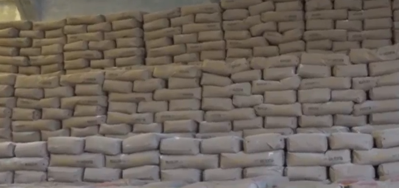

El gerente de Emapa, Franklin Flores, informó que el 18 de este mes llegarán aproximadamente 60.000 toneladas de harina.
Con el objetivo de abastecer al sector panificador, que se declaró en alerta debido a la falta de harina a causa de los bloqueos de carreteras, la Empresa de Apoyo a la Producción de Alimentos (Emapa) anunció que se entregará 35.000 bolsas (cada bolsa es de 50 kilos) del producto esta semana. “Este volumen va a ser muy importante para el sector panificador. Son 7.000 bolsas de 50 kilos que se van a entregar hoy (lunes); en total son 35.000 bolsas que se van a entregar esta semana”, informó el gerente de la estatal, Franklin Flores. Puede leer: Vías Bolivia registra pérdidas de Bs 16,5 en los 22 días del bloqueo evista Harina Según explicó el funcionario, varios camiones estaban varados en las carreteras, a causa de los bloqueos del ala evista del Movimiento Al Socialismo (MAS). Sin embargo, gracias a los operativos de desbloqueo, estos tráileres pudieron llegar al departamento de La Paz. De acuerdo con Flores, el objetivo del Gobierno es mantener el precio del pan de batalla en Bs 0,50. Debido al desabastecimiento de harina, varios productores advirtieron con un encarecimiento del producto. Además, el gerente de Emapa afirmó que durante la gestión del presidente Luis Arce “se ha duplicado la entrega al sector panificador”. “Históricamente, el Estado entregaba a los hermanos panificadores un promedio de 1 millón y 1,2 millones de quintales de harina; pero en un ajuste por decisión del presidente, este volumen se duplicó. El año pasado llegamos a entregar 2,3 millones de bolsas de 50 kilos”, precisó Flores. En ese sentido, informó que el próximo 18 de noviembre llegarán 60.000 toneladas de trigo que permitirán que el Gobierno entregue al final de gestión un total de 2,4 millones de bolsas de harina a los panificadores. Asimismo, destacó el precio, pues el Estado entrega la bolsa de 50 kilos a Bs 136, mientras que en el mercado está a un precio de Bs 290.